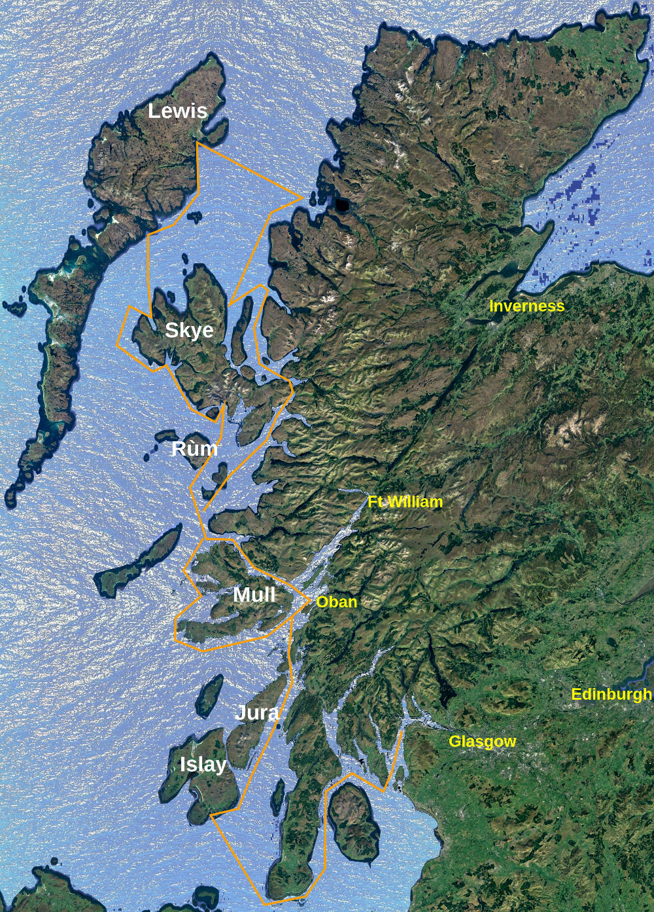

Für die Saison 2020 sind weitere Reisen entlang der Schottischen Westküste geplant. Oban hat sich als günstiger Ort für Crewwechsel bewährt. Mit guten Einkaufsmöglichkeiten, guter Erreichbarkeit ab Edinburgh oder Glasgow ist der kleine Ort im Norden Schottlands ein praktischer Start- und Endpunkt.
Meist bietet sich ein Besuch in Tobermory an um dann je nach Wetter und Crew um Ardnamurchan Point in das wildere Gebiet im Norden zu gelangen oder südwärts um Mull herum Jura und Islay zu besuchen.
Wandern und leichtes Klettern bietet Rùm mit einem geschützten Ankerplatz.
Meist treffen sich bereits untereinander bekannte Teilnehmer zu einer Reise von einer oder zwei Wochen. Anfrage am einfachsten direkt beim Vereinssekretär.
Die Teilnahme an einer Reise erfordert eine Vereinsmitgliedschaft. Der Reisebeitrag beträgt CHF 900.00 pro Woche und pro Teilnehmer. An Bord werden die Kosten für Lebensmittel, Getränke, Hafengebühren, Diesel und Anlässe über eine Bordkasse geteilt.

One of the may themes to follow when discovering these places is the book of Samuel Johnson and James Boswell "A Journey to the Western Islands of Scotland
and The Journal of a Tour to the Hebrides"